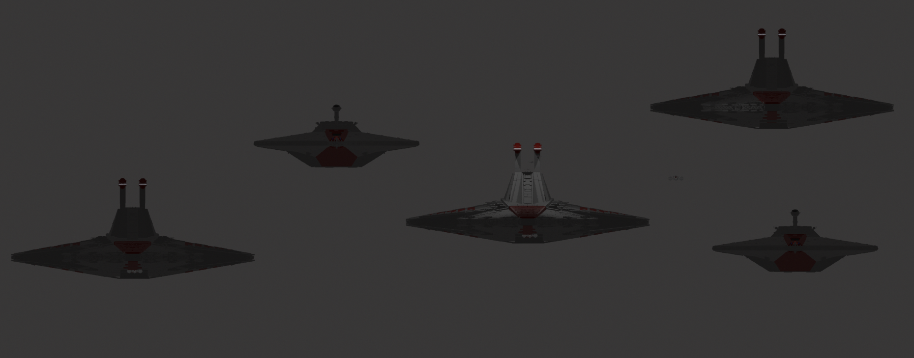
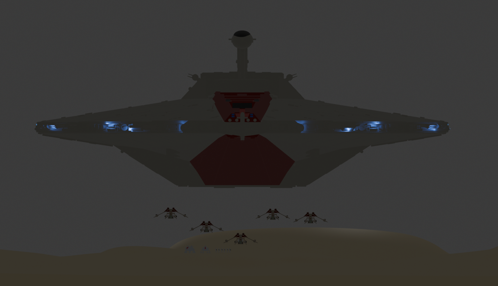
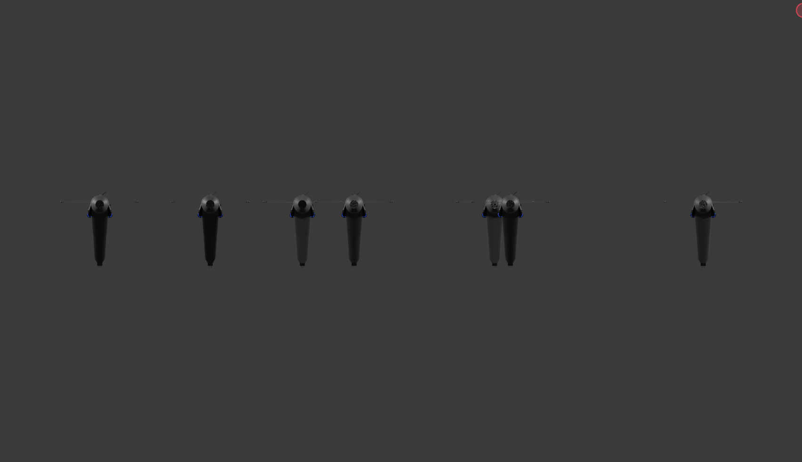
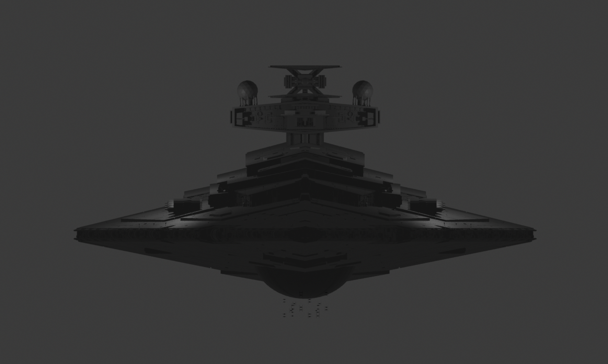
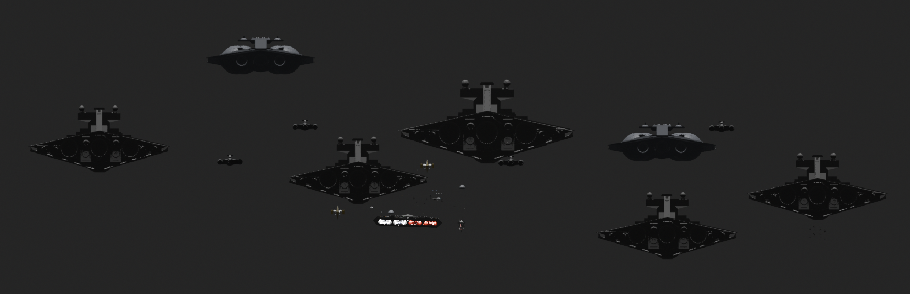

Venator
Venator — the Republic’s main star destroyer during the Clone Wars, combining powerful weapons with a large starfighter hangar. Acclamator — an assault ship used to transport clone troopers, vehicles, and equipment to battlefields across the galaxy. Senator — a diplomatic vessel designed for transporting senators and carrying out important missions for the Galactic Republic.






War next to Lothal
The Battle of Lothal was an important victory for the Rebel Alliance. Grand Admiral Thrawn attacked the planet Lothal with the Imperial fleet. Ezra Bridger used the help of the purrgil, giant space creatures, to defeat the Empire. The purrgil took Thrawn and Ezra into hyperspace, allowing the Rebels to win. After the battle, Lothal was finally free from the Galactic Empire.